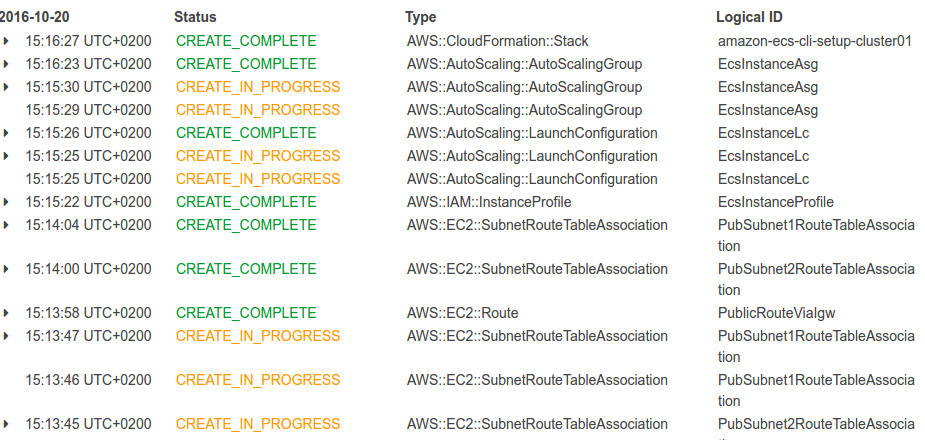
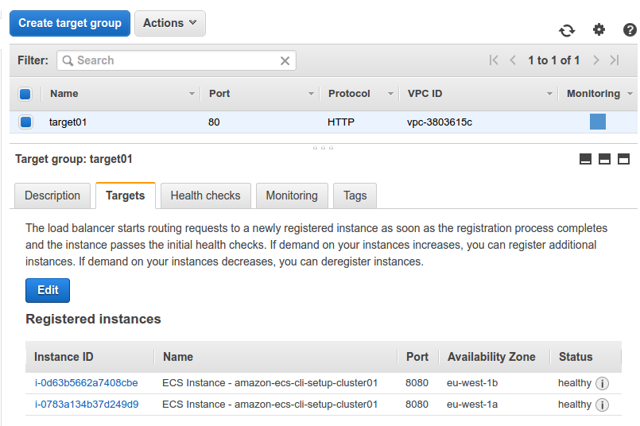

Laszlo Fogas

Docker cluster management on AWS
2016-10-21
tldr In this episode I reuse the well known Docker Compose files from part 2 and run the stack on AWS. I also explore production usage on AWS ECS.
By the end of part 2 of the series I was able to run any set of services with any feature branch on a remote machine. The setup was quite pleasing to me since the local and test environments were identical and I could showcase the state of development easily for Product Management or QA.
I could reach that point relatively easily since I used only Docker’s built in tooling. They were perfectly integrated and very powerful, thanks to Docker’s batteries included approach.

I was also moaning a bit that I couldn’t point my Docker Compose script to a cluster of Docker Engines in swarm mode, but I generally wasn’t sure about the next steps.
- I could translate my stack described in compose files to the new service concept - introduced in Docker 1.12 - and explore swarm mode
- and later manage that cluster through Rancher.
- I could also try Amazon AWS’s managed cluster solution: ECS
- or dive into competing stacks like Kubernetes, and later on experience with Google Cloud’s managed options.
ECS: Elastic Container Service
Eventually I opted for ECS since there are already plenty of new concepts to juggle with. Managing my own cluster - while it is intellectually pleasing - seemed like an overkill.
Especially as AWS provides tooling to reuse my Docker Compose files, and it took only a few changes to fit my work to ECS.
You can check those changes here. Basically I had to drop the depends_on definition in favor of links, and extended the compose file with CPU and memory restrictions.
While running compose on ECS for QA environments was a breeze, I had to create AWS flavored service definitions anyway for my production stack. But more on that later.
Launching a cluster
ECS has a very straightforward documentation, and it’s easy to create a cluster with the AWS dashboard based on that.
I generally favor scripts and configuration management tools simply because it’s easier to recreate and automate the work later on. For the sake of fewer moving parts I created my first cluster through the AWS CLI and didn’t use tools like Ansible, Cloudformation or Terraform.
ecs-cli configure --region eu-west-1 --cluster cluster01
ecs-cli up --keypair ecs --capability-iam --size 2 --instance-type t2.micro
The above two commands create a complete ECS cluster with all the network infrastructure it requires. It uses a CloudFormation template in the background, where you can validate the actual complexity of the stack.

ECS services and tasks
ECS has two primitives to work with: services and tasks.
Tasks basically mirror the service definition section of the Docker Compose file. You define the used Docker image here, exposed ports, volumes and a bunch of other things.
Services represent a higher level of abstraction. You define what task to run, how many instances, what load balancer to use, and you set the auto scaling parameters here too. The ECS service makes sure that the preferred amount of containers run, it starts new containers if one dies, and you also perform rolling updates through the service definition by changing the referenced task. ECS takes care of the redeployment.
Compose up
Once the cluster is running, I start up the environment defined in the docker-compose.yml file.
ecs-cli compose service up
It creates the required task definitions from the compose file and also creates a service.
Similarly to Docker Compose, I can check the status, or stop the environment with the ecs-cli compose service ps and ecs-cli compose service stop commands. It also shows where can I access the exposed port.
.../web-python RUNNING 52.210.151.19:5000->5000/tcp ...-multi-env:2
.../boot RUNNING ...-multi-env:2
.../redis RUNNING ...-multi-env:2
At this point the service is accessible on the displayed IP, I only have to do a small modification in the AWS Security Group because I use a non standard port. And while I’m there, I make sure that the service is only accessible to me. That you can do by limiting the incoming traffic to your office IP, but I rather suggest to set up VPN access for higher security.
Since the flow is identical to the flow in part 2, I simply modified the start-env script to operate with the ecs-cli commands, and I achieved the same flexibility using an ECS cluster.
Each time I run the script I get a new environment exposed on a random port, on one of the cluster node’s IP.
Full disclosure: this is not full cluster transparency, but it is sufficient for QA environments. I will address this by load balancers in my production setup.
Production setup
There are a few notable limitations which prevent me from running my production stack directly from compose files:
- ecs-cli compose service up puts all my components into one task definition, and all components in a single task are deployed together on the same cluster node.
- Putting all components in the same task means that I can only scale them together with the means of services. This is way too rigid for production deployment.
- A task can only take up to 10 components
- Referencing components by their name through links only work within one task definition. This I have to address with an extra layer of abstraction.
So essentially I’m facing the same problem as with using compose with swarm mode. I have to architect my production layout differently than my local and QA environments.
This may feel like giving up Docker’s main promise, but I argue that the value is in the flexibility I achieved with the local/QA environments by handling the whole stack together.
It’s also time to mention that in those environments I generously overlooked the complex network layout what production setups have. Furthermore some elements of my stack may never be Dockerized for production use. Large scale SQL databases, or managed database services - like RDS or ElastiCache - may not benefit of the agility of containers.
So the task ahead is to create the fine grained version of the service definitions, and solve the problem of Service Discovery.
Service Discovery light
Service Discovery is a problem that became prominent recently in the highly volatile environment of immutable infrastructures. Since services come and go, scale up and down, one can never be sure on what IP address a service is accessible. Putting IP addresses into application configuration files is too rigid to handle the fast changes. The need arise to turn things up side down.
Service discovery tools like Netflix Eureka, Consul become very popular. Essentially every service registers its access information in these components, and the service clients obtain the connection information from these service registries.
In my example though I solve the problem by simply using AWS’s Elastic Load Balancer (ELB) service. Especially as it is now aware of ECS services. Services automatically get registered in ELB, so I can be sure that by accessing the service on a given DNS name, my request is routed to one of the containers in an ECS service.
This combined with the new path based routing in ELB, and the ability to run a load balancer on internal networks allows me to not introduce any complex Service Discovery component.
Launching the production service
I had to provide a few parameters in order to create the load balancer. The subnets are the ones where the ECS cluster nodes are created, and I created a brand new security group for the load balancer. Later on the cluster nodes will only allow connections from the load balancer, while the load balancer takes the ingress traffic.
aws elbv2 create-load-balancer --name elb01 --subnets subnet-ae0f49ca subnet-573e4221 --security-groups sg-08e22e6e
aws elbv2 create-target-group --name target01 --protocol HTTP --port 80 --vpc-id vpc-3803615c
aws elbv2 create-listener --load-balancer-arn arn:aws:...loadbalancer/app/elb01 --protocol HTTP --port 80 --default-actions Type=forward,TargetGroupArn=arn:aws:...targetgroup/target01
You can find out more about the target group and listener components in this article.
The last thing I had to prepare is the task and service definition files.
{
"containerDefinitions": [
{
"cpu": 300,
"essential": true,
"image": "laszlocph/spring-boot-dummy:exposed",
"memory": 300,
"name": "boot",
"portMappings": [
{
"containerPort": 8080,
"hostPort": 8080
}
]
}
],
"family": "boot",
"volumes": []
}
{
"cluster": "cluster01",
"serviceName": "boot",
"taskDefinition": "boot:1",
"loadBalancers": [
{
"targetGroupArn": "arn:aws:e....:targetgroup/target01/03f4ca3155c8db4a",
"containerName": "boot",
"containerPort": 8080
}
],
"desiredCount": 2,
"clientToken": "11yzFkCnk6FD8QBtBIYN8GBSqpOYieIk",
"role": "ecsServiceRole",
"deploymentConfiguration": {
"maximumPercent": 200,
"minimumHealthyPercent": 50
}
}
Both were based on a blank definition generated by
aws ecs register-task-definition --generate-cli-skeleton
aws ecs create-service --generate-cli-skeleton
commands respectively, but I also had success using this container transform utility that transforms Docker Compose files to ECS task definitions, or Kubernetes Pods, if that’s what you need.
aws ecs register-task-definition --cli-input-json file://boot-task.json
aws ecs create-service --cli-input-json file://boot-service.json
After registering the task and service in ECS, the container instances get registered in the ELB Target Group and the service is available on load balancer’s hostname.

Rolling out updates
Deploying a new version of the service requires to update the service definition. Then the changes are shown in the ECS logs.
aws ecs update-service --cluster cluster01 --service arn:aws:ecs:eu-west-1:782027979363:service/boot --task-definition boot:2

Full disclosure: the update took many minutes, but most of the time was spent in draining connections from ELB. The default five minutes can be changed to speed up deployment.
More services
Since a single instance of the load balancer can handle many services - each mapped into a different subpath or port - the only requirement to create a new service is to create the task and service definitions, and to create a new target group for each service that you reference in the service definition. Containers will be automatically registered to the load balancer.
Next steps
It was a good exercise to create the first service with AWS CLI, mapping all services by hand though is a bit cumbersome. Configuration management tools - where the versioned state of the service is stored - can aid this problem. As a possible next step I will explore either Ansible, Terraform or CloudFormation to manage the stack at a higher level.
Onwards!
Read some more:
- Builing Docker images with Github Actions (2019-09-02)
- Setting GOPATH in Github Actions - revisited (2019-08-29)
- Setting GOPATH in Github Actions (2019-08-28)
- DroneOSS08 Devlog #1 (2019-04-24)
- Drone Environment Variables - Three tips (2019-03-26)
- Drone Community Edition - what is included? (2019-03-21)
- The ultimate DroneCI caching guide (2019-02-28)
- How using cache-from can speed up your Docker builds in DroneCI (2019-02-20)
- Cloud and Containers - August (2017-08-31)
- Gitlab take two - Dynamic environments (2017-07-25)
- Is the one-stop-shop Gitlab CI fits all? (2017-07-20)
- Why access control is key for a secure multi-tenant Kubernetes deployment? (2017-07-17)
- Rancher Kubernetes routing (2017-05-31)
- Rancher Kubernetes persistence with GlusterFS (2017-05-26)
- Attack your cloud bill - A hybrid cloud strategy with Rancher, AWS and Google (2016-11-28)
- I get it Laszlo, but how do I get started? (2016-10-26)
- Docker cluster management on AWS (2016-10-21)
- Mastering test environments with Docker (2016-10-12)
- A simple Jenkins 2.0 and Docker workflow (2016-10-05)